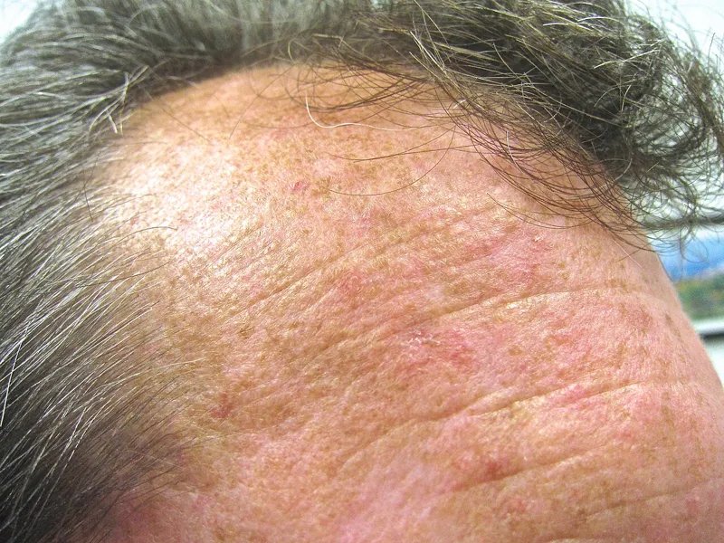
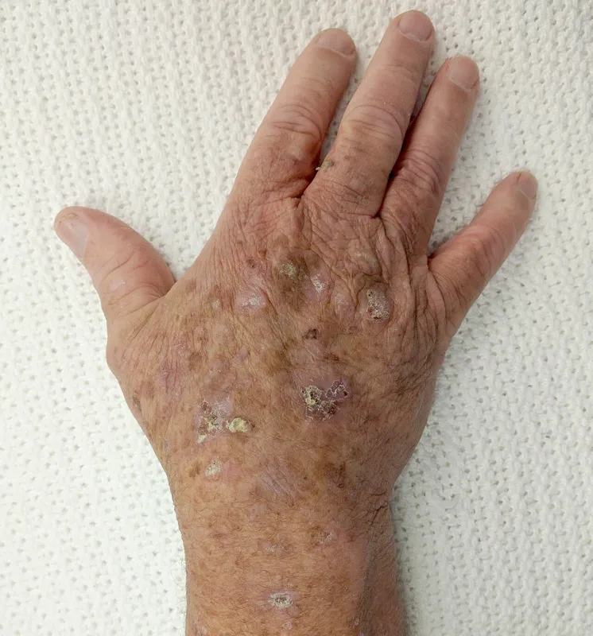
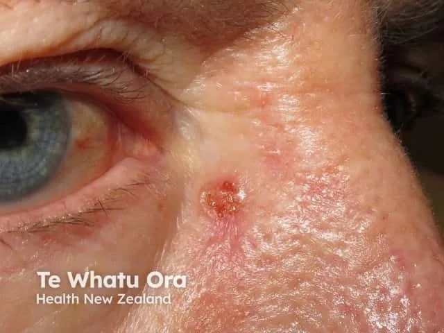
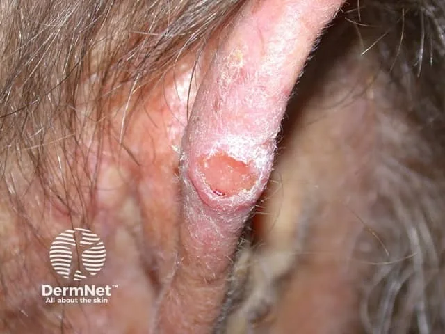
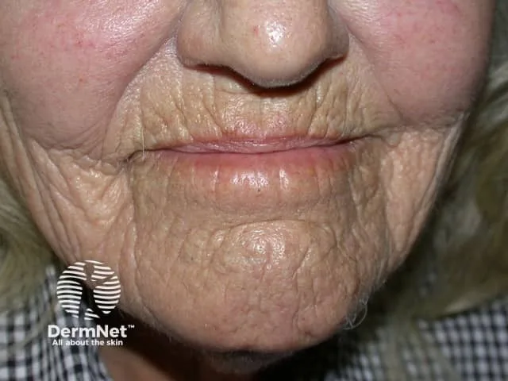
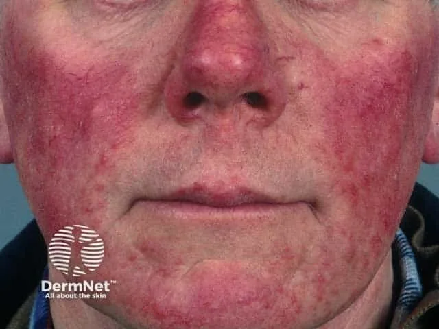
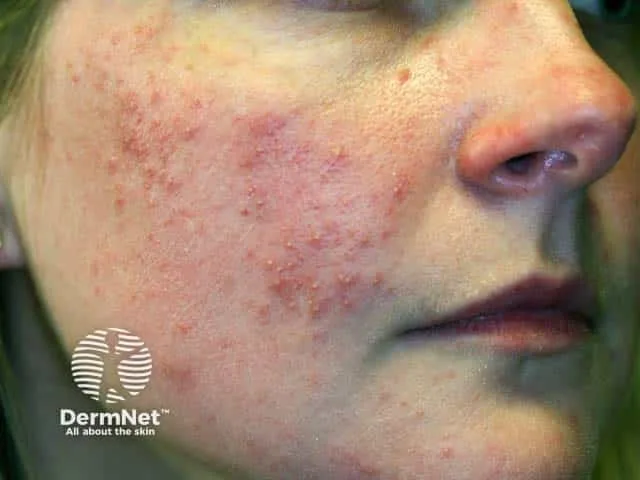

Dermetrics / Patienteninformationen & Behandlungspläne
Patienteninformationen & Behandlungspläne
Behandlungspläne und Wissensseiten für Patientinnen und Patienten — kurz und ohne Fachjargon. Ersetzt keine individuelle ärztliche Beratung.
Behandlungspläne
Krankheitsbilder
Hautkrebs, Vorstufen, Hautalterung und Rosazea: Entstehung, Erkennung und Behandlung.


Aktinische KeratosenEntstehung, Erkennung und Behandlung einer der häufigsten Vorstufen von weissem Hautkrebs.Zum Behandlungsplan
BasalzellkarzinomDie häufigste Hautkrebsform: Entstehung, operative Behandlung und Nachsorge.Zum Behandlungsplan
SpinaliomDie zweithäufigste Form von weissem Hautkrebs und ihr enger Zusammenhang mit der Sonnenexposition.Zum Behandlungsplan
Solare ElastoseKein Hautkrebs selbst, aber ein wichtiger Marker für erhöhtes Hautkrebsrisiko.Zum Behandlungsplan

RosazeaEine chronisch-entzündliche Hauterkrankung des Gesichts mit drei typischen Stadien.Zum BehandlungsplanBehandlungspläne
Nach Alter und Hautthema
Evidenzbasierte Hautpflege-Behandlungspläne, passend zur Lebensphase.
Weitere Wissensseiten